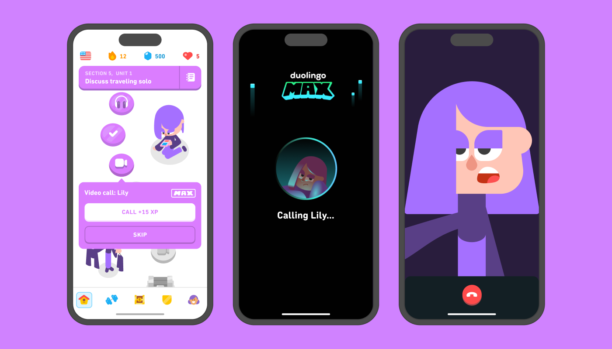

What we recreated
A video
call that
can't
see you.
Our version is
Olingo Live: it sees your world, and it runs entirely on this Mac.

Duolingo's Video Call with Lily · the limit
Lily only hears you, Duolingo picks the topic, and your voice goes to the cloud.
Image: Duolingo
1 / 2
Under the hood · every model runs on this Mac
PrismML Bonsai
thinks on the GPU.
Argmax
hears and speaks on the Neural Engine.
1 · Hears
Argmax · Neural Engine
WhisperKit
Whisper small first, large-v3 when unsure. Word probabilities colour each character you say back.
0.15 to 0.3 s
an English sentence
2 · Thinks · code picks the route, never a model
PrismML · GPU (Metal)
Bonsai-2, three routes
Short lines
4B
Replies that need no context.
77 to 85 tok/s
Conversation
9B
Text only, cached prompt.
0.5 to 1.1 s
to the first sentence
"What is this?"
9B + vision
One 512 x 288 frame.
56 tok/s
3 · Speaks
Argmax · Neural Engine
TTSKit
One voice across two languages. It starts speaking while Bonsai is still writing.
0.35 s
to the first sound
1.5
+
0.9
GB
Ternary weights: 9B and 4B both stay loaded.
That is why routing works: no loading, no swapping.
4
%
Two accelerators at the same time.
All the speech work on the Neural Engine slows Bonsai from 56.4 to 54.2 tok/s.
Measured on this MacBook Pro, M4 Pro, 24 GB · Olingo's voice starts 0.9 to 1.6 s after yours ends
2 / 2